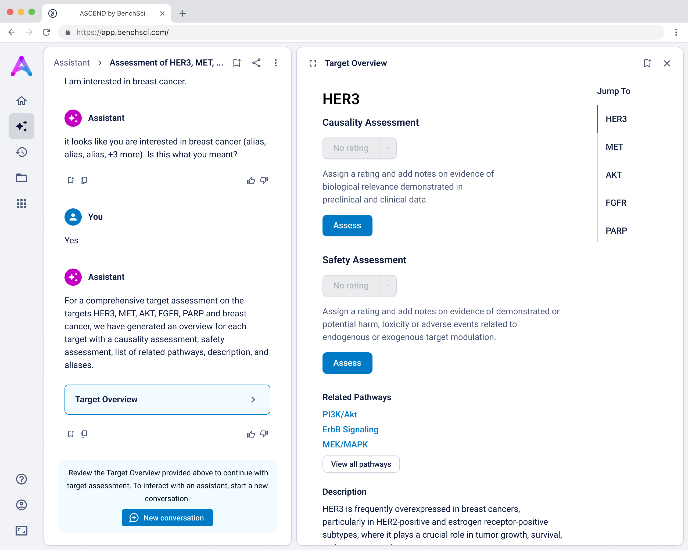

Target Assessment
Problem
For scientists working in early-stage drug discovery, choosing the right biological target is one of the most critical and challenging decisions they make. The data they need to make that decision is fragmented, buried in siloed data sources, and requires manual interpretation. Among the many factors scientists must weigh, two of the most critical are:
- Is this target actually causing the disease? (causality)
- Can we safely develop a treatment against it? (safety)
Answering even these fundamental questions requires weeks of manual research and interpretation. This creates a clear opportunity: by helping scientists quickly assess the strength and risk of a target early on, we can reduce wasted time and effort, and increase the likelihood of selecting a successful target the first time.
For design, addressing the target selection problem meant surfacing complex biological evidence in a way that’s actionable, trustworthy, and intuitive.
Solution
Scientists can search their candidate targets in a specific disease context to view a dashboard that helps them quickly compare targets side-by-side. The interface surfaces key evidence across multiple dimensions: biological relevance, clinical trials, and adverse phenotypes to help answer core questions around causality and safety. By bringing this data together in a single, intuitive view, enables scientists to eliminate weak targets earlier and make more confident, informed decisions.

Find the right targets in a disease context
An autocomplete form helps scientists quickly search and select up to five biological targets in the context of a specific disease. This interaction sets clear expectations and ensures entries match real entities in our database, avoiding dead-end searches and enabling fast, accurate assessments.
Visualize complex evidence without the overwhelm
Scientists first see a dashboard that enables quick, side-by-side comparison of targets in the context of a specific disease. The interface surfaces key evidence across biological relevance, clinical trials, and adverse phenotypes, helping scientists assess causality and safety at a glance, and eliminate weak targets with confidence.

Give scientists the depth they need at the right time in their analysis
Scientists can click “View Data” to explore the underlying evidence behind each visualization. This transparency is critical as scientists are deeply analytical and skeptical by nature. Earning their trust means showing the work, not just providing conclusions.

Summarized insights upfront, detailed evidence below
An AI-generated text summary sits above the data tables to help scientists quickly grasp key insights before diving into the details. This bridges what they saw in the visualizations with the underlying evidence, making it easier to interpret complex data without losing context.

Surface safety signals with smart, structured grouping
Before showing the full list of safety references, adverse events are grouped by organ system and modulation direction (increase, decrease, or unknown). This extra layer of aggregation helps scientists interpret the data more effectively by highlighting key safety patterns, making it easier to spot potential red flags before digging into the detailed evidence.
Go from summary to source in one click
When scientists click on a row in the reference table, a side panel opens with a concise summary of the original study and a direct link to the source. This interaction keeps them grounded in context while giving them the transparency and traceability they need to trust and verify the data.

My role
I was the sole lead product designer working alongside a Technical Product Manager, Product Manager, UX Researcher, and Science Lead. We worked on the primary solution functionality with a team of supporting members from science, data pipeline, and engineering to ensure the designs were supported by the data and functionality in the application.
Tools


Approach
We began building the Target Assessment tool during a pivotal moment in the industry. LLMs and AI tools like ChatGPT were gaining attention, and both our customers and board were asking how we planned to respond. The pressure to deliver something fast was real, but we didn’t have much customer data to work with. At the time, we had limited customer access, very little feedback from Target Assessment Scientists, and significant constraints reaching pharma users. Instead of beginning with robust discovery, we decided to build something tangible and use that to begin getting feedback. While I know this isn't best practice (product development should ideally start with user discovery), our situation called for deviations from the traditionally “good” product development practice.
To keep up with the rising use of LLMs and chat-based tools, the company made a strategic decision to build a conversational AI interface, meaning every user interaction would begin with a chat-based entry point. This wasn’t just a new design pattern for us; it was an entirely unfamiliar paradigm. None of our previous products were conversational, and we were now tasked with building an experience around LLMs for the very first time. Our team had varied levels of understanding when it came to language models, and no one had direct experience with prompt design or architecting AI-driven workflows. We were learning everything from technical foundations to user experience considerations, in real time. Naturally, this slowed our momentum and compounded uncertainty, especially as we tried to balance strategic ambition with the practical realities of learning-by-doing.
These circumstances caused us to follow an unconventional design process. You will see that where we started in the designs evolved a lot to what is outlined above in the solution.
Phase 1: Ideate and Test
Picking an area of focus
We began by grounding our work in what we already knew. Without direct access to Target Assessment Scientists, we collected and synthesized questions we believed scientists would need to answer during the target selection phase of the drug discovery funnel. These questions were mapped out in a collaborative Miro board, where we identified key decision points and handoffs in the process. To strengthen our assumptions, we invited input from our customer-facing teams, leveraging their domain knowledge and proximity to users to fill in some of the early feedback gaps.
From this mapping exercise, it became clear that the Target Discovery workflow, defined by the key question, “What are the best targets for my therapeutic area?” was the most promising and viable area for us to focus on. It struck the right balance across several vectors: customer desirability, data availability, and minimal overlap with other product areas.
Defining the experience
With a direction in place, I outlined a user flow of a conversational experience that accepted a disease as input, and would output a list of candidate targets for that disease. The goal was to surface relevant targets while allowing enough flexibility for refinement based on scientific context and preferences.
Designing the output
At this point, I needed to consider what format the recommended targets would take in the response to the scientist, once they specified the disease via the chat, as demonstrated:
I landed on a table to display the targets to provide structured visibility into five key dimensions for each target:
- Disease Mechanism
- Therapeutic Opportunity
- Pathways
- Safety Profile
- Intellectual Property Status
This format had multiple advantages. Practically, it allowed us to re-use components we had already developed for the existing Target Prioritization Assistant, helping us reduce overhead and move faster. Strategically, it enabled scientists to compare options side-by-side, helping them build conviction while remaining open to further exploration.
Originally, I explored having a rating assigned for each category for easy scannability:
However, due to technical constraints and performance concerns for generating these ratings, we proceeded with the following table:
Using this table as the primary output also helped us simplify the technical implementation. Given the newness of the technology both for the company and the team, it was important to contain complexity and validate utility before investing in heavier customization. Our priority was speed to learning, and the table format allowed us to test our assumptions quickly, iterate, and deliver value without overcommitting upfront.
Phase 2: Pivot
Just as we were preparing to move forward with the target identification assistant, a major re-organization reshaped our team. Morale was low, and confusion grew as responsibilities blurred between a newly added Technical Product Manager and the existing Product Manager I had been closely collaborating with. As the technical PM began to take on more influence, decision-making became increasingly unclear.
Shortly after, the Technical Product Manager directed us to pivot. They deemed our concept too similar to an existing product, Target Prioritization - which had recently launched and was not meeting scientists’ expectations. Instead, we were told to focus on Target Assessment, reframing our work around helping scientists assess a pre-existing list of targets rather than providing the scientist with suggested targets. This strategic shift triggered a full round of rethinking: new hypotheses, user testing, and multiple design iterations.
We made a number of feature decisions:
Updating the chat experience for target assessment
Originally, the chat experience asked scientists to input only a disease, which generated a list of potential targets. While this aligned with earlier goals around target identification, it didn’t support the deeper target assessment workflow we pivoted toward, where scientists already have candidate targets in mind and are looking to evaluate their viability.
To better serve this need, we updated the chat to allow users to input up to five specific targets along with a disease context. This shift repositioned the chat from being a discovery tool to being an assessment tool. The purpose was to help scientists decide whether a target was worth pursuing by delivering detailed information on each target’s biological relevance, safety considerations, and supporting evidence.
Introducing the target overview
To help scientists build a high-level understanding of their selected targets before diving into detailed evidence, I introduced a landing page called target overview, summarizing general information about each target in the context of the selected disease.
The original vision included LLM-generated summaries of the causality and safety data, allowing scientists to quickly grasp emerging trends and key signals at a glance. However, due to technical complexity and performance limitations, this summarization was descoped from the initial release. As a result, the overview focused on presenting available target metadata and acting as a launch point for deeper exploration.
Creating data modules focused on scientist priorities
To support deeper evaluation, we created dedicated data modules that focused on the two areas scientists care most about when assessing targets: causality and safety.
These modules pulled from our internal datasets and were structured to surface meaningful patterns, not just raw information. For example, in the causality module, studies were grouped by the effect on disease (improved, worsened, or unknown) and target modulation (increase or decrease), giving scientists a clearer sense of trends and consistency in the evidence. Each group could be expanded to reveal individual data points, allowing users to toggle between summary and detail as needed.

Introducing ratings and notes for scientist-driven conclusions
To support scientists in forming and documenting their own assessments, we introduced the ability to add ratings and notes directly within each data module. After reviewing the evidence, scientists could assign subjective ratings (e.g., strength of causality or risk) and capture qualitative observations.
This feature was designed to help scientists externalize their thinking and track insights as they moved through the assessment, acting as a lightweight, in-context layer of interpretation. Our goal was to bring structure to the decision-making process while giving scientists flexibility to express nuance in their conclusions.
Phase 3: From Internal Iteration to Real-World Feedback
After months of internal iteration, including a major pivot in direction, we reached a point where continuing to tweak the experience without customer input became a greater risk than moving forward. We had no concrete validation from users, and both expanding scope and iterating further were unlikely to produce meaningful new insights.
With engineering ready to begin implementation and the sales team actively preparing for beta conversations, I handed off the designs and built a prototype to support early feedback sessions with real customers. These sessions were invaluable in surfacing key usability issues and assumptions that hadn't been tested earlier:
The overview page didn’t deliver immediate value
Without implementing LLM summarization, the overview page served mostly as a placeholder with generic “View data” call-to-actions. Scientists were left asking, “You say this is a target assessment, but where is the assessment?” The lack of actionable insight on this page failed to meet expectations and reduced trust in the tool.
Grouped rows were not discoverable
To reduce cognitive load, I grouped the data in the tables, but this unintentionally obscured the value of the content. Scientists didn’t immediately grasp what was being shown, and the disclosure triangle used to expand the groups was too subtle and often overlooked. In addition to the usability concerns, the technical complexity of supporting grouped rows led us to simplify the design and display the data more openly.

Notes weren’t useful, and introduced hesitation
The notes feature was intended to let scientists record observations, but both early testing and customer conversations revealed it wasn’t aligned with their workflows. Most scientists preferred using their existing electronic lab notebooks and were hesitant to leave comments in-app, especially without clarity on privacy or visibility. Additionally, assigning structured ratings like “high causality” felt too rigid for the nuance and uncertainty involved in scientific evaluation.
The chat interface felt clunky and limiting
I designed a conversational interface to guide scientists through target assessment in alignment with the product strategy, but BenchSci lacked the technical expertise to build a truly dynamic, context-aware chat experience. Instead, the chat behaved more like a rigid decision tree, with pre-defined prompts and hardcoded responses. On average, it took two minutes to get to any meaningful output, which was far too slow, especially when users were accustomed to more responsive tools like ChatGPT. Many dropped off before completing the assessment.
Phase 4: Re-focus and Iterate
Refocusing on the right persona
Early in the project, limited access to scientists meant we spoke with whoever was available at our customer organizations. This often included adjacent roles, like Assay Developers, who collaborate with Target Assessment Scientists but have different goals and data needs. As a result, we gathered feedback from a mix of personas, leading to conflicting requirements and an unfocused product direction.
Target Assessment sits at the top of the drug discovery funnel and influences many downstream decisions. While the core user is the Target Assessment Scientist, they often collaborate with specialists like Risk Analysts and Translational Scientists, each with their own deep domain expertise. Designing for everyone at once led us to build solutions that were too broad and failed to provide clear value to any one user.
To address this, I facilitated a workshop with the team to realign around a single, clearly defined persona: the Target Assessment Scientist. I developed both a detailed persona and workflow map, which helped us clarify the key decisions, pain points, and functional needs of our core user while still acknowledging where collaborators fit into the broader process.
Bringing value upfront through the use of visualizations
The original Target Overview page wasn’t delivering. It lacked enough substance to keep scientists engaged, but overloading it with raw data risked overwhelming them. I knew we needed a better balance; something that conveyed meaningful insights at a glance, while inviting deeper exploration.
To achieve this, I explored several more visual-forward concepts, including:
- AI-generated ratings summarizing therapeutic potential
- Graphical summaries of key evidence themes
I iterated on many different visualizations, varying the way we grouped and summarized data, as well as the type of graph used. We tested multiple variations to find the sweet spot.
Once we saw strong qualitative signals that visualizations resonated with users, I knew static Figma prototypes weren’t enough. I needed to understand how scientists would actually interact with the content; how they would navigate, compare targets, and move between visual summaries and underlying data.
That’s when I began building an interactive prototype using Bolt and v0 (password: ascend2025). This allowed us to simulate real workflows and gather higher-fidelity feedback.


If you’re curious to see how I collaborated with my team, here’s an example of a walkthrough I gave of a prototype I built in v0 to ideate on the safety data:
Switch to structured input
As mentioned above, our original chat-like input created confusion. Scientists assumed they were interacting with a smart assistant that could handle flexible, contextual queries, but the system was limited to predefined flows, which led to unmet expectations and friction. To address this, I replaced the chat interface with a structured input form that made system expectations clear. No guesswork, no confirmation loops, just straightforward entry fields that showed users exactly what was understood. I tested three variations:
- Single freeform field for both
- Multiple target fields and a disease field (most overwhelming)
- Separate fields for targets and disease (best performance)
The version with a field for targets and another for disease struck the best balance — it guided input without overcomplicating the experience, and helped scientists understand system limitations without discouraging use.
After implementation we saw the following impact: Merck users entered data 30 seconds faster, with a 5.37% boost in conversion. GSK users completed the same task 1 minute 30 seconds faster, with a 3.07% lift in conversion.
Learnings
Clear decision ownership is crucial
When multiple people act as product managers, accountability blurs. Spending time to define the roles and responsibilities helped temporarily, but it wasn’t until we had a single decision-maker that alignment and momentum improved.
Design heuristics and research combined result in stronger advocacy
Combining user insights with design best practices helped us push key decisions, like having each row in the data tables correspond to a publication. When we couldn’t clearly connect ideas to user needs, like with notes and ratings, we lost traction. The takeaway: build arguments on both user desire and real-world mental models.
Start smaller
The project grew too big too fast. Without enough external feedback, internal voices filled the void, often without alignment. We should’ve launched a stripped-down MVP (e.g., a simple prioritization table or causality view) and built iteratively from there. Smaller chunks would have resulted in faster feedback and easier planning.
Focus on one core persona
Target Assessment Scientists were our primary audience, but we tried to please too many related roles. That diluted the value. Centering the experience around one clear persona gave us clarity and made the product stronger.
Rapid testing wins
Quickly discarding ideas that didn’t work (and testing many with Bolt/V0) helped us iterate more confidently. This approach reduced reliance on static design tools and allowed validation through real interactions, without the need for engineering capacity.
Concluding Thoughts
This project pushed me to rethink how to design for scientific decision-making. Having the right data presented at the right level of granularity enabled us to build trust with the scientists, and pushed me to build a better interface. I learned that clarity, focus, and iteration are more powerful than complexity. By grounding decisions in real user behavior, leaning on design and research together, and testing smarter, we delivered something that fundamentally simplifies scientists’ work. The path wasn’t linear nor was it “best practice”, but the learnings shaped not only the product, but how to work as a team.